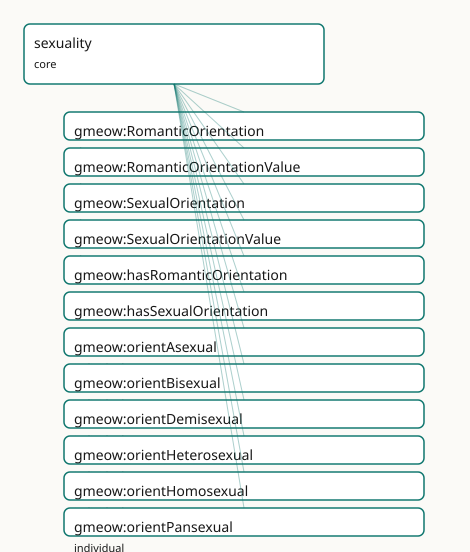

GMEOW Sexuality Module
- IRI: https://blackcatinformatics.ca/gmeow/slices/sexuality
- Tier: core
Group: core
What This Slice Covers
This slice owns 24 terms and contributes 19 mapping or projection rows. Use it when its terms match the native fact you want to preserve; use the linkage tables to see how those facts leave GMEOW for consumer vocabularies.
Dependencies
Consumers
- Identity facets on persons (P16: core by commitment); the 7-axis orthogonality matrix.
Local Map

Examples
Split Attraction
- Source:
slices/core/sexuality/examples/split-attraction.ttl - GMEOW terms:
gmeow:IdentityFacet,gmeow:Person,gmeow:RomanticOrientation,gmeow:SexualOrientation,gmeow:facetSubject,gmeow:facetVantage,gmeow:hasRomanticOrientation,gmeow:hasSexualOrientation,gmeow:name,gmeow:orientAsexual
# SPDX-FileCopyrightText: 2026 Blackcat Informatics® Inc. <paudley@blackcatinformatics.ca>
# SPDX-License-Identifier: CC-BY-4.0
#
# Worked example: the split-attraction model (, P9). Sexual orientation and
# romantic orientation are SEPARATE, mutually independent axes — each a reified,
# self-asserted gmeow:IdentityFacet on the shared base. Because the axes never
# collapse into one another, an asexual-biromantic person is directly expressible:
# asexual sexual attraction AND biromantic romantic attraction, neither inferred
# from the other nor from gender, expression, sex-assigned-at-birth, or address.
# Values are open vocabularies of individuals; both facets are co-equal with no
# preferred orientation, and self-assertion is the top authority.
@prefix gmeow: <https://blackcatinformatics.ca/gmeow/> .
@prefix ex: <https://blackcatinformatics.ca/gmeow/examples/sexuality/> .
ex:robin a gmeow:Person ;
gmeow:name "Robin"@en ;
gmeow:hasSexualOrientation ex:sexual ;
gmeow:hasRomanticOrientation ex:romantic .
# A facet is an Observation: gmeow:facetSubject is whose facet it is, and for a
# self-asserted facet the gmeow:facetVantage is the person themselves (P9).
# --- Sexual orientation axis: asexual.
ex:sexual a gmeow:SexualOrientation ;
gmeow:facetSubject ex:robin ;
gmeow:facetVantage ex:robin ;
gmeow:sexualOrientationValue gmeow:orientAsexual ;
gmeow:selfAsserted true .
# --- Romantic orientation axis: biromantic — independent of the sexual axis.
ex:romantic a gmeow:RomanticOrientation ;
gmeow:facetSubject ex:robin ;
gmeow:facetVantage ex:robin ;
gmeow:romanticOrientationValue gmeow:romanticBiromantic ;
gmeow:selfAsserted true .
Terms
Classes
| Term | Label | Definition |
|---|---|---|
gmeow:RomanticOrientation |
Romantic Orientation | A person's SELF-ASSERTED romantic orientation — the pattern of their romantic attraction — as a reified facet pointing (via gmeow:romanticOrientationValue) to... |
gmeow:RomanticOrientationValue |
Romantic Orientation Value | A pattern of romantic attraction — a VALUE pointed at by gmeow:romanticOrientationValue, never a subclass. Kept separate from sexual orientation (split-attract... |
gmeow:SexualOrientation |
Sexual Orientation | A person's SELF-ASSERTED sexual orientation — the pattern of their sexual attraction — as a reified facet pointing (via gmeow:sexualOrientationValue) to an ope... |
gmeow:SexualOrientationValue |
Sexual Orientation Value | A pattern of sexual attraction — a VALUE pointed at by gmeow:sexualOrientationValue, never a subclass. Open: an orientation not seeded here is a fresh individu... |
Properties
| Term | Label | Definition |
|---|---|---|
gmeow:hasRomanticOrientation |
has romantic orientation | Relates a person to a self-asserted romantic-orientation facet. Non-functional and contextual; a superseded one is kept with gmeow:displayable false, never del... |
gmeow:hasSexualOrientation |
has sexual orientation | Relates a person to a self-asserted sexual-orientation facet. Non-functional and contextual; a superseded one is kept with gmeow:displayable false, never delet... |
gmeow:romanticOrientationValue |
romantic orientation value | The gmeow:RomanticOrientationValue a romantic-orientation facet asserts (functional per facet). A predefined individual or a fresh one with rdfs:label; the sin... |
gmeow:sexualOrientationValue |
sexual orientation value | The gmeow:SexualOrientationValue a sexual-orientation facet asserts (functional per facet). A predefined individual or a fresh one with rdfs:label; the single... |
Individuals
| Term | Label | Definition |
|---|---|---|
gmeow:orientAsexual |
asexual | The asexual sexual orientation value — a pattern of sexual attraction that an agent may experience. |
gmeow:orientBisexual |
bisexual | The bisexual sexual orientation value — a pattern of sexual attraction that an agent may experience. |
gmeow:orientDemisexual |
demisexual | The demisexual sexual orientation value — a pattern of sexual attraction that an agent may experience. |
gmeow:orientHeterosexual |
heterosexual | The heterosexual sexual orientation value — a pattern of sexual attraction that an agent may experience. |
gmeow:orientHomosexual |
homosexual / gay / lesbian | The homosexual sexual orientation value — a pattern of sexual attraction that an agent may experience. |
gmeow:orientPansexual |
pansexual | The pansexual sexual orientation value — a pattern of sexual attraction that an agent may experience. |
gmeow:orientQueer |
queer | The queer sexual orientation value — a pattern of sexual attraction that an agent may experience. |
gmeow:orientQuestioning |
questioning | The questioning sexual orientation value — a pattern of sexual attraction that an agent may experience. |
gmeow:romanticAromantic |
aromantic | The aromantic romantic orientation value — a pattern of romantic attraction that an agent may experience. |
gmeow:romanticBiromantic |
biromantic | The biromantic romantic orientation value — a pattern of romantic attraction that an agent may experience. |
gmeow:romanticDemiromantic |
demiromantic | The demiromantic romantic orientation value — a pattern of romantic attraction that an agent may experience. |
gmeow:romanticHeteroromantic |
heteroromantic | The heteroromantic romantic orientation value — a pattern of romantic attraction that an agent may experience. |
gmeow:romanticHomoromantic |
homoromantic | The homoromantic romantic orientation value — a pattern of romantic attraction that an agent may experience. |
gmeow:romanticPanromantic |
panromantic | The panromantic romantic orientation value — a pattern of romantic attraction that an agent may experience. |
gmeow:romanticQueerromantic |
queerplatonic / queer-romantic | The queerromantic romantic orientation value — a pattern of romantic attraction that an agent may experience. |
gmeow:romanticQuestioning |
questioning | The questioning romantic orientation value — a pattern of romantic attraction that an agent may experience. |
Linkages
- Rows: 19
- Projection profiles: -
- External vocabularies:
gsso,homosaurus,wd,wdt
| Source | Kind | Profile | Predicate/Relation | Target | Evidence |
|---|---|---|---|---|---|
gmeow:orientAsexual |
equivalence | - |
skos:closeMatch | homosaurus:homoit0000004 | gmeow-sexuality.sssom.tsv; gmeow:eqSexuality014; confidence 0.9 |
gmeow:orientAsexual |
equivalence | - |
skos:closeMatch | wd:Q724351 | gmeow-sexuality.sssom.tsv; gmeow:eqSexuality013; confidence 0.9 |
gmeow:orientBisexual |
equivalence | - |
skos:closeMatch | gsso:001590 | gmeow-sexuality.sssom.tsv; gmeow:eqSexuality009; confidence 0.85 |
gmeow:orientBisexual |
equivalence | - |
skos:closeMatch | homosaurus:homoit0000170 | gmeow-sexuality.sssom.tsv; gmeow:eqSexuality008; confidence 0.85 |
gmeow:orientBisexual |
equivalence | - |
skos:closeMatch | wd:Q43200 | gmeow-sexuality.sssom.tsv; gmeow:eqSexuality007; confidence 0.9 |
gmeow:orientDemisexual |
equivalence | - |
skos:closeMatch | homosaurus:homoit0000343 | gmeow-sexuality.sssom.tsv; gmeow:eqSexuality016; confidence 0.9 |
gmeow:orientDemisexual |
equivalence | - |
skos:closeMatch | wd:Q23912283 | gmeow-sexuality.sssom.tsv; gmeow:eqSexuality015; confidence 0.9 |
gmeow:orientHeterosexual |
equivalence | - |
skos:closeMatch | gsso:001592 | gmeow-sexuality.sssom.tsv; gmeow:eqSexuality004; confidence 0.85 |
gmeow:orientHeterosexual |
equivalence | - |
skos:closeMatch | homosaurus:homoit0000631 | gmeow-sexuality.sssom.tsv; gmeow:eqSexuality003; confidence 0.85 |
gmeow:orientHeterosexual |
equivalence | - |
skos:closeMatch | wd:Q1035954 | gmeow-sexuality.sssom.tsv; gmeow:eqSexuality002; confidence 0.85 |
gmeow:orientHomosexual |
equivalence | - |
skos:closeMatch | homosaurus:homoit0000647 | gmeow-sexuality.sssom.tsv; gmeow:eqSexuality006; confidence 0.85 |
gmeow:orientHomosexual |
equivalence | - |
skos:closeMatch | wd:Q6636 | gmeow-sexuality.sssom.tsv; gmeow:eqSexuality005; confidence 0.85 |
gmeow:orientPansexual |
equivalence | - |
skos:closeMatch | gsso:001593 | gmeow-sexuality.sssom.tsv; gmeow:eqSexuality012; confidence 0.85 |
gmeow:orientPansexual |
equivalence | - |
skos:closeMatch | homosaurus:homoit0001073 | gmeow-sexuality.sssom.tsv; gmeow:eqSexuality011; confidence 0.85 |
gmeow:orientPansexual |
equivalence | - |
skos:closeMatch | wd:Q271534 | gmeow-sexuality.sssom.tsv; gmeow:eqSexuality010; confidence 0.9 |
gmeow:orientQueer |
equivalence | - |
skos:closeMatch | homosaurus:homoit0001195 | gmeow-sexuality.sssom.tsv; gmeow:eqSexuality018; confidence 0.8 |
gmeow:orientQueer |
equivalence | - |
skos:closeMatch | wd:Q51415 | gmeow-sexuality.sssom.tsv; gmeow:eqSexuality017; confidence 0.85 |
gmeow:romanticAromantic |
equivalence | - |
skos:closeMatch | homosaurus:homoit0001644 | gmeow-sexuality.sssom.tsv; gmeow:eqSexuality019; confidence 0.9 |
gmeow:sexualOrientationValue |
equivalence | - |
skos:closeMatch | wdt:P91 | gmeow-sexuality.sssom.tsv; gmeow:eqSexuality001; confidence 0.8 |
Guide
Sexuality — split-attraction orientation on the shared facet base
Slice:
https://blackcatinformatics.ca/gmeow/slices/sexuality· tier: core Sexual and romantic orientation as two separate, self-asserted, co-equal identity axes.
Where most models offer one sexualOrientation slot (if they offer anything), GMEOW applies
the split-attraction model: sexual orientation and romantic orientation are separate,
mutually independent axes, each a reified self-asserted facet on the gender slice's
gmeow:IdentityFacet base. Asexual-biromantic, aromantic-bisexual, and every other
combination are directly expressible because the axes never collapse into each other — and
neither is ever inferred from gender identity, gender expression, sex-assigned-at-birth,
pronouns, or honorifics. These two axes complete the seven-axis orthogonality matrix
(with gender's three and names' two), whose pairwise disjointness is a reasoner theorem
asserted in the gender module and whose bridge-absence is a closed-world lint
(tests/test_identity_orthogonality.py).
The governing tenets are exactly gender's, because the base is shared (Principle 9):
self-assertion is the top authority (gmeow:selfAsserted); facets are co-equal with
deliberately no preferred/primary orientation term; value spaces are open vocabularies of
individuals, never per-value subclasses, never a forced enum — inclusive without
overtyping. A superseded label is kept with gmeow:displayable false, suppressed, never
erased (Principle 10). And like all identity slices, this one is core by commitment
(Principle 16): orientation modelling is not an opt-in extension.
The two axes
gmeow:SexualOrientation
A person's self-asserted pattern of sexual attraction, as a reified facet (a
gufo:Relator and gmeow:Observation, inheriting facetSubject/facetVantage, the
validity clocks, and displayable from IdentityFacet). A separate axis from romantic
orientation and from every gender axis; nothing infers one from another.
gmeow:hasSexualOrientation
The bearer property, Person → facet. Non-functional and contextual: identities shift, and
multiple co-equal facets coexist — a superseded one is suppressed, never deleted. MUST NOT
be inferred from hasRomanticOrientation, hasGenderIdentity, sexAssignedAtBirth,
pronouns, or honorifics.
gmeow:sexualOrientationValue
Functional per facet — one value each; multiplicity is expressed by more facets. The
single path to the value (no flat-literal shortcut exists, deliberately): a seeded
individual, or a fresh SexualOrientationValue individual with rdfs:label when none fits.
gmeow:RomanticOrientation
A person's self-asserted pattern of romantic attraction — the other half of the
split-attraction model, structurally a twin of SexualOrientation but a fully independent
axis: asexual yet biromantic is two facets on two axes, no tension, no inference.
gmeow:hasRomanticOrientation
The romantic bearer property; same contract as its sexual sibling — non-functional, contextual, suppression-not-deletion, and no inferential bridge to any other axis.
gmeow:romanticOrientationValue
Functional per facet; the single path to an open RomanticOrientationValue.
The value vocabularies
gmeow:SexualOrientationValue · gmeow:RomanticOrientationValue
Two separate open vocabularies under gufo:QualityValue, kept apart so the
split-attraction distinction is explicit in the data (asexual ≠ aromantic — they are
different individuals in different value spaces, and the spaces are disjoint by the matrix
axioms). Seeds: heterosexual / homosexual / bisexual / pansexual / asexual / demisexual /
queer / questioning, and their romantic counterparts plus queerplatonic. The seeds are
anchors, not a fence: mint a fresh individual with rdfs:label for anything unseeded —
never a flat string, never a new subclass.
ex:sam a gmeow:Person ;
gmeow:hasSexualOrientation ex:samSexual ;
gmeow:hasRomanticOrientation ex:samRomantic .
ex:samSexual a gmeow:SexualOrientation ; # asexual …
gmeow:sexualOrientationValue gmeow:orientAsexual ;
gmeow:selfAsserted true .
ex:samRomantic a gmeow:RomanticOrientation ; # … and biromantic, independently
gmeow:romanticOrientationValue gmeow:romanticBiromantic ;
gmeow:selfAsserted true .
The relator-mediation existentials (someValuesFrom the value classes) live here in EL form
for the reasoner; the closed-world "exactly one value per facet" is deliberately SHACL's job
, keeping the logic small and decidable (Principle 12's boundary discipline).
Alignment — and an honest lossy drop
GSSO, Homosaurus, and Wikidata alignments live in mappings/gmeow-sexuality.sssom.tsv.
schema.org and FOAF have no orientation term at all, so at the projection layer
orientation is a documented lossy drop (Principle 4): the projection records what it
cannot carry rather than flattening it into a string somewhere it doesn't belong. The
reified, self-asserted, co-equal, split-attraction machinery is canonical and exists only
here (Principle 5: superset by reference, never dumbed down at the source).
Dependencies
Depends on entities and gender (the IdentityFacet base, selfAsserted, and the matrix
axioms). Consumed wherever persons are: identity facets are core by commitment
(Principle 16), and the gender slice's matrix axioms reference these classes by name.